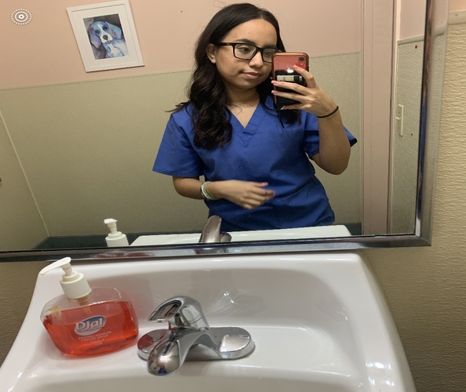
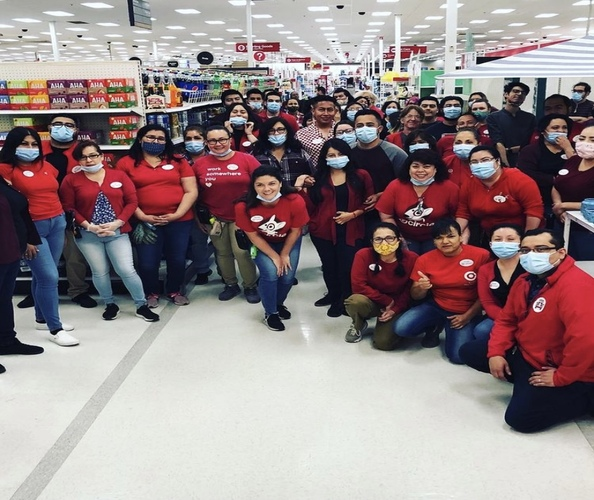
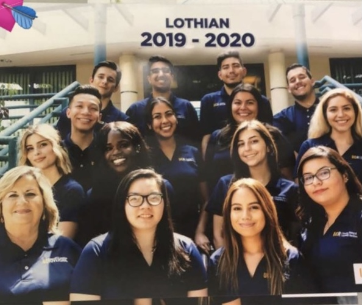
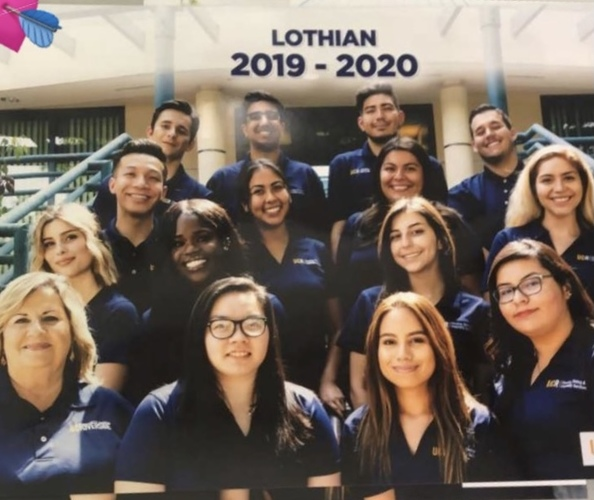

Jasmine Murillo
I am currently a fourth-year pre-PA psychology major at the University of California, Riverside. I recently received my Phlebotomy certification at UEI college. I aspire to attend CSU Monterey Bay to obtain a Master of Science degree in Physician Assistant.
In addition to my passion for the healthcare field, I also have a great love for working with children. Thus, I hope to specialize in family medicine and/or pediatrics.
My experience ranges from working with adolescents in and out of the hospital. I began volunteering at the Los Angeles Children’s Hospital and have since transitioned over to volunteering at Providence Holy Cross Medical Center. Outside of the hospital, I spend my free time volunteering in schools as a After-School caregiver/tutor. I, particularly, enjoy helping children realize their self-efficacy and help them overcome educational barriers.
As a psychology major, I have also explored other areas in my field, such as Human Resourcing and Academic Advising. During my undergraduate degree, I worked as Human Resourcing Assistant for Target, Inc. in Los Angeles, CA. My responsibilities included onboarding, enforcing company policies, and adhere to CDC rules for the COVID-19 pandemic. Upon leaving Target, Inc., I began my position as a Peer Mentor at the University of California, Riverside. In this position, I worked closely along students helping them develop their skills and work towards their educational goals.
Experience
Academic Transition Peer Mentor
• Provide mentorship to current transitioning students during, and potentially after, their major transition.
• Manage check-in and share their transition experiences in the format of a student panel and
answer questions from the workshop participants.
• Perform administrative tasks for the Transition Advising Program at the Undergraduate
Academic Advising Center
Human Resource Expert
• Provide technical and administrative support to the HR team by accurately maintaining employee records.
• Execute intentional recruiting efforts to help store leaders find and hire talent with the right skills and experiences to best serve their guest.
• Act as an open door by listening to team members and collaborating with appropriate leaders to take action as needed
UCR Housing Conference Team Lead
• Directly co-supervised and train a staff of 40 Housing Conference Team Members.
• Maintained confidentiality with records and guests’ information
• Supported staff development by initiating disciplinary and counseling processes as
needed
• Participated in the HCTL duty rotation to respond to emergency situations
Education
University of California Riverside
Portfolio




